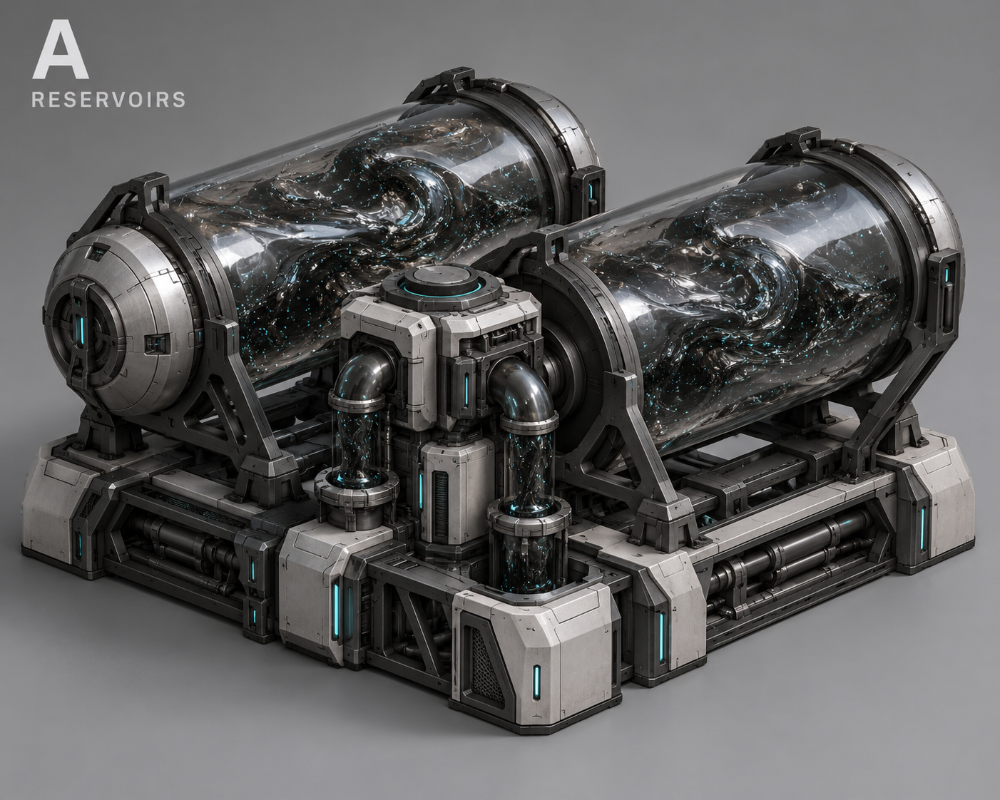
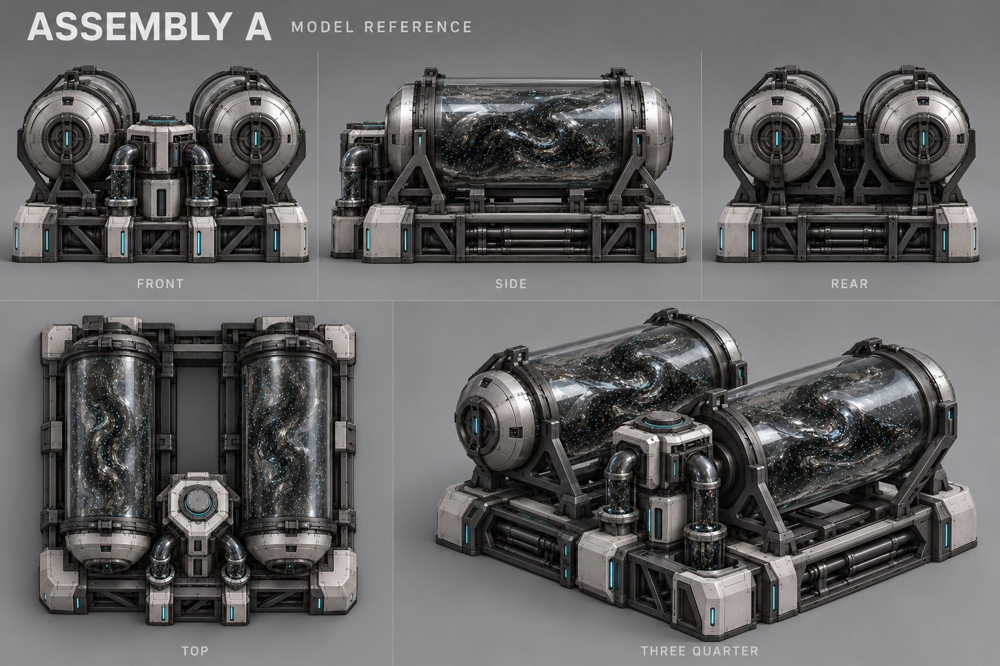
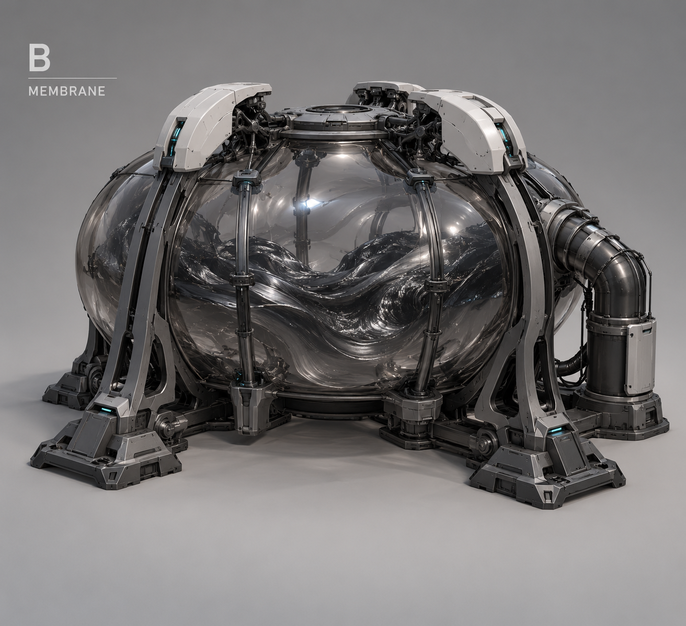
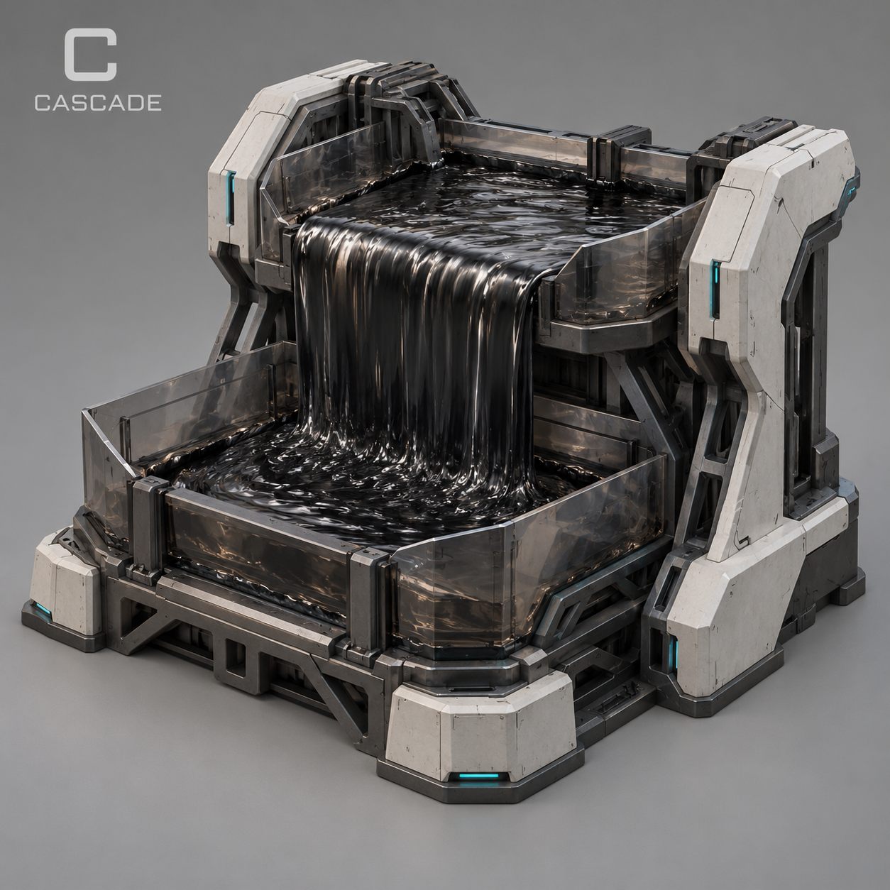
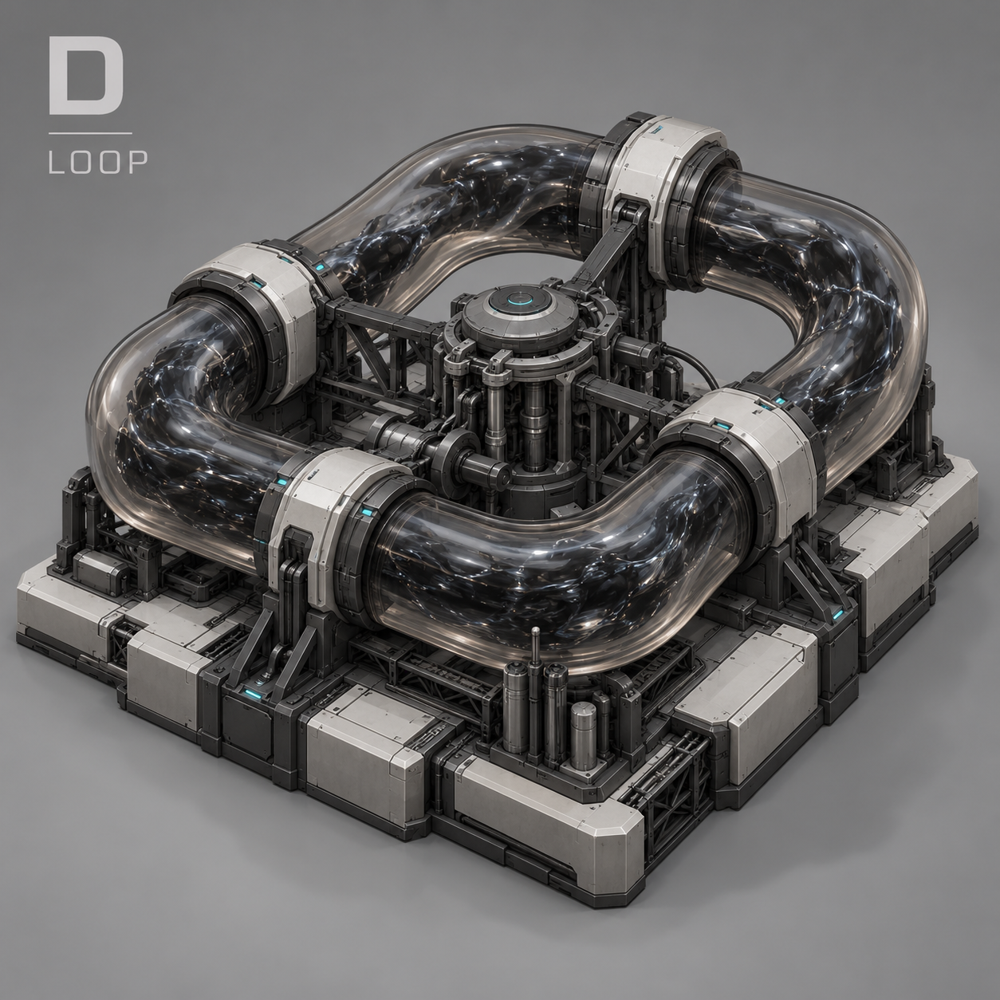
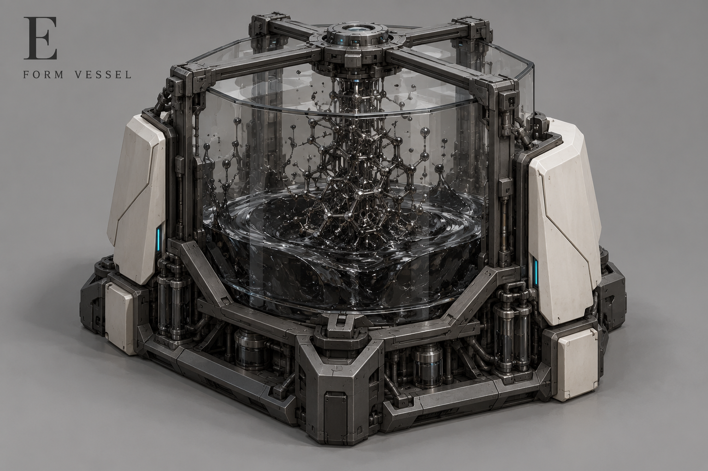
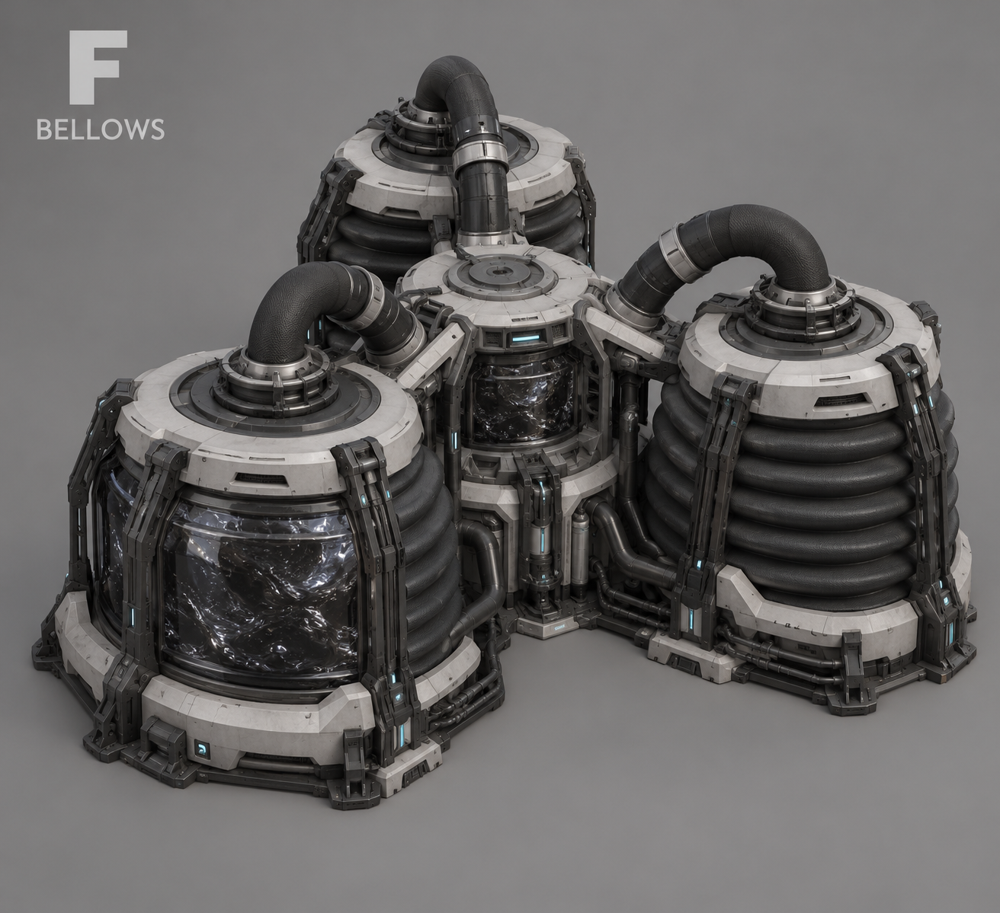

A — Цистерны
Две полупрозрачные цистерны с циркулирующей нанитной массой.

Полупрозрачные ёмкости, мембраны, открытые каркасы и нанитная масса. Выбран A — две полупрозрачные цистерны. Ядро A сохраняется.
Функции прежние. Без ворот и ангаров; юниты формируются из массы снаружи.
Все концепты · Описание · Промпты · Предыдущие варианты
Две цистерны и общий насосный блок. Пять ракурсов; геометрию проверяем при моделировании. Две ёмкости не означают две производственные очереди.

Две полупрозрачные цистерны с циркулирующей нанитной массой.

Гибкая полупрозрачная камера в редком силовом каркасе.

Нанитная масса перетекает между двумя технологическими лотками.

Крупный прозрачный циркуляционный канал вокруг насосного блока.

Прозрачная камера, в которой масса временно образует геометрическую структуру.

Три гибкие камеры сжатия с крупными соединительными каналами.
